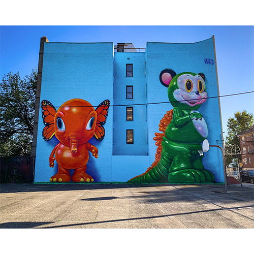
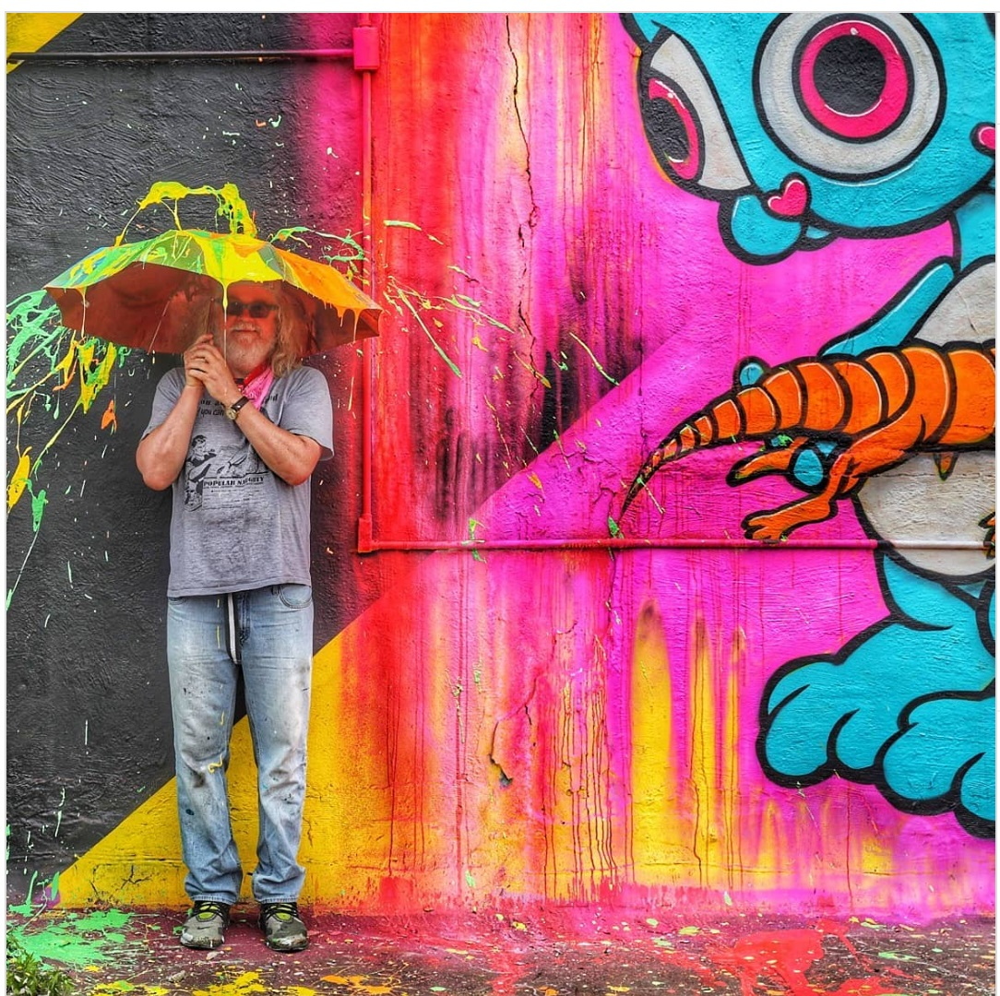
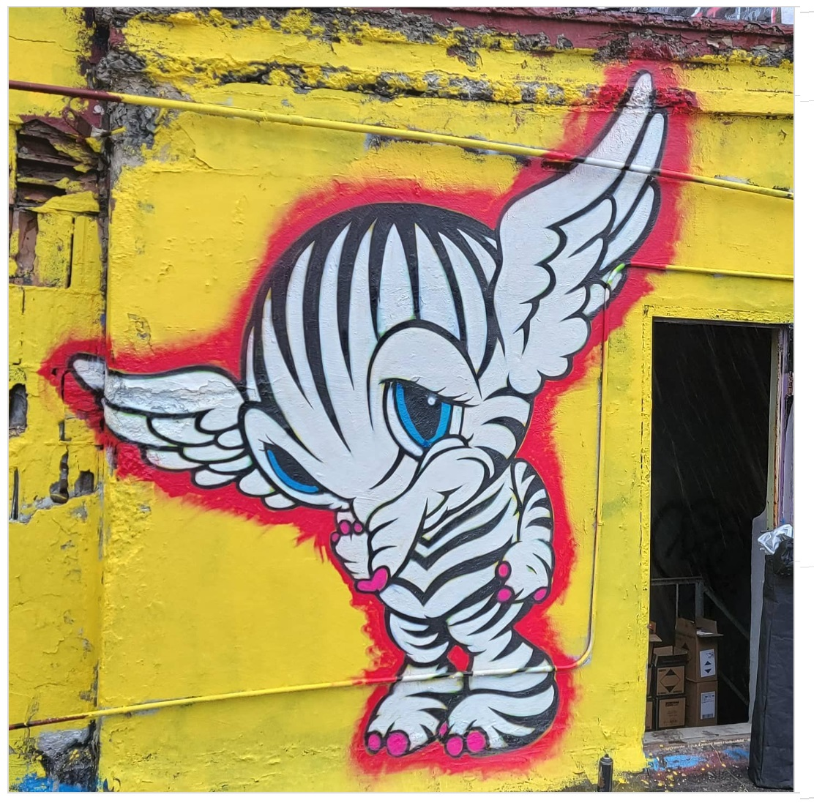
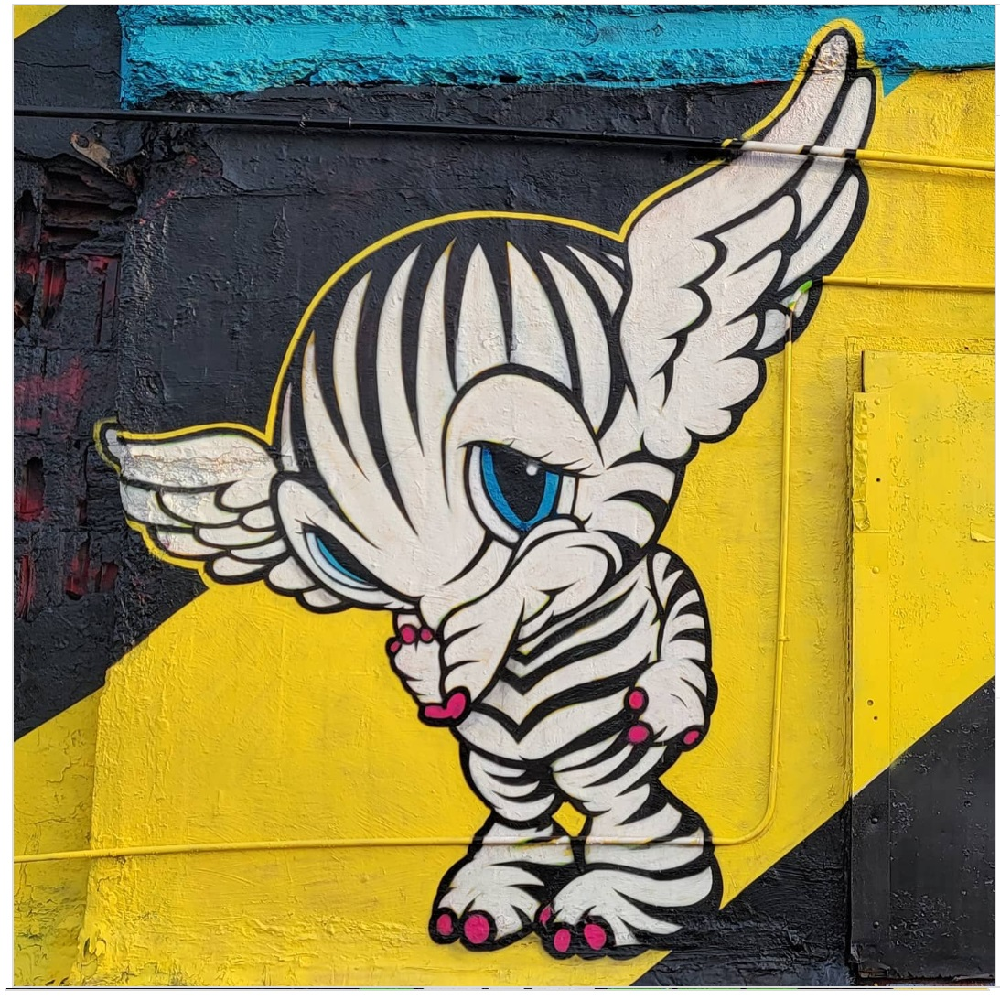
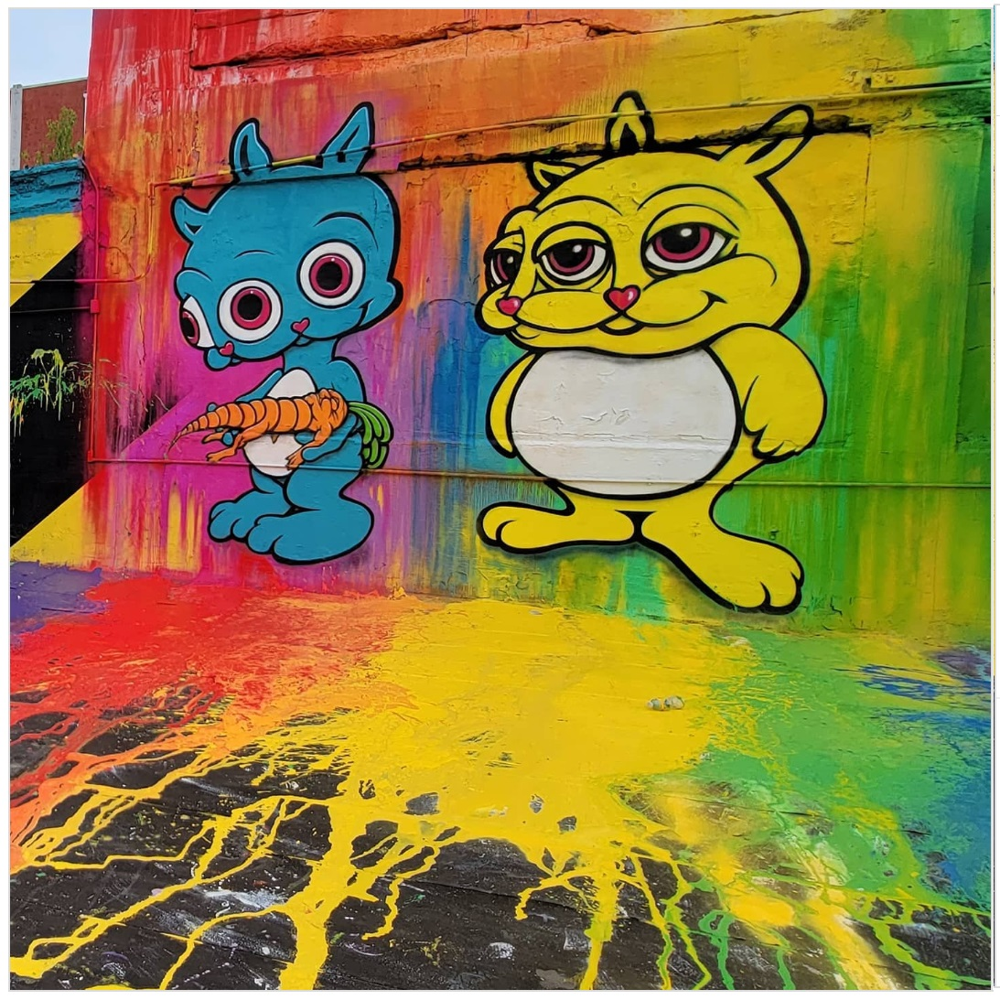
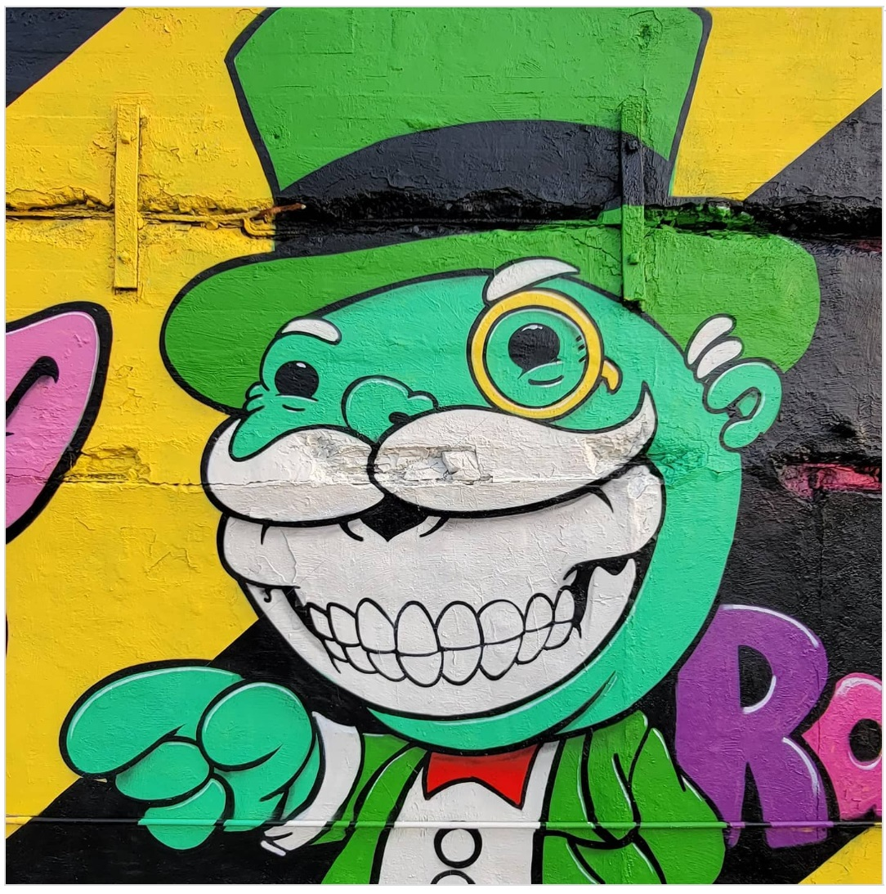

Jersey City Mural Festival, 2021
Rooftop mural painted live during the inaugural Jersey City Mural Festival in June 2021.

Work details
Description
Painted live during the inaugural Jersey City Mural Festival, this multi-character rooftop façade extended Ron English’s long-running relationship with Jersey City’s public-art scene. Festival coverage described the weekend as a “Woodstock for artists,” noting how English’s Delusionville characters and flowing paint streams transformed the warehouse roof into a POPaganda spectacle visible across the festival zone.
Gallery






Sources
- Patch – Jersey City welcomes Woodstock artists for new mural fest
- Brooklyn Street Art – Jersey City Mural Festival preview
- Brooklyn Street Art – Community & street aesthetics at Jersey City Mural Festival 2021
- Jersey City Mural Festival – Ron English artist page
- Jersey City Mural Festival – official site
- Everything Jersey City – Mural Arts Festival recap
- Jersey’s Best – How murals are transforming N.J. communities
- YouTube – Jersey City mural footage